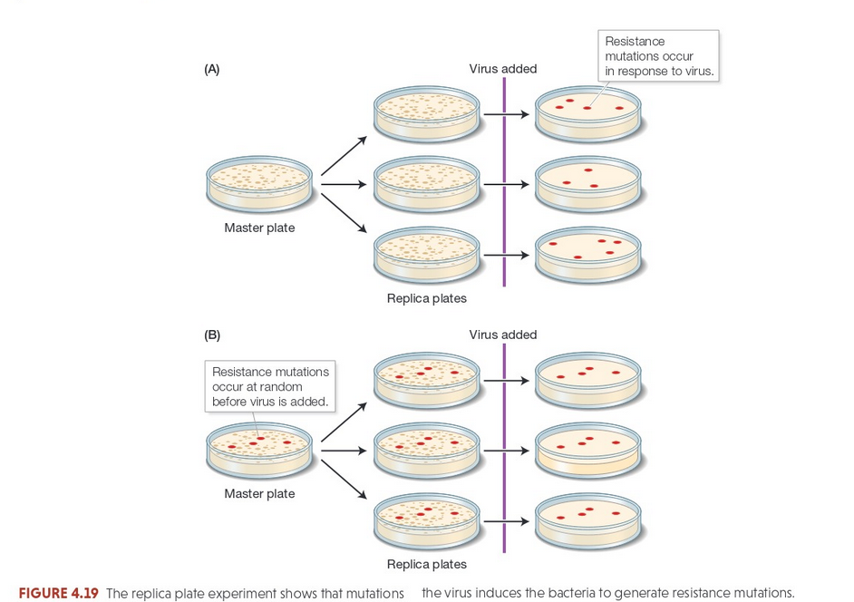
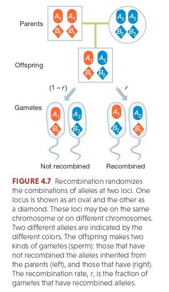
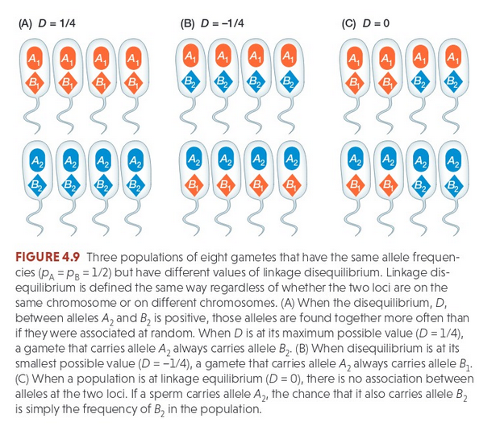
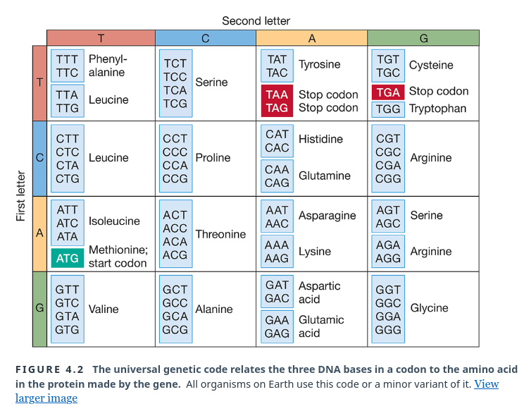
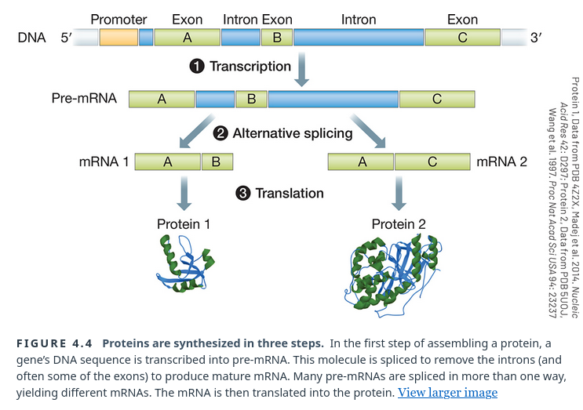
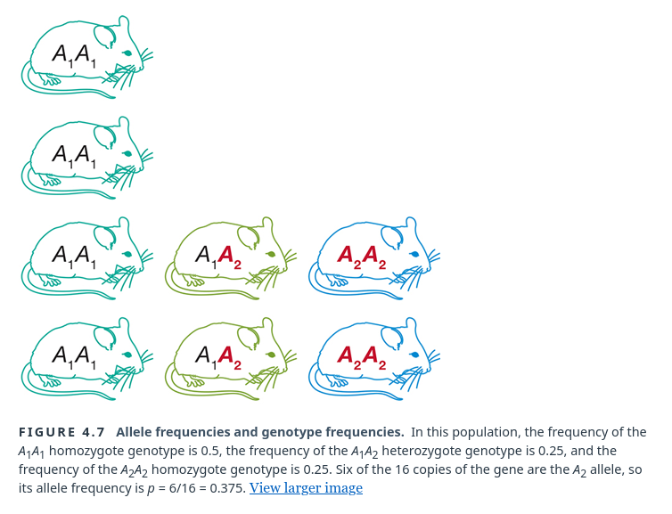
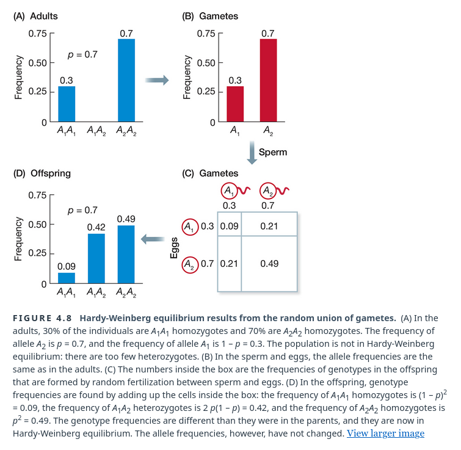
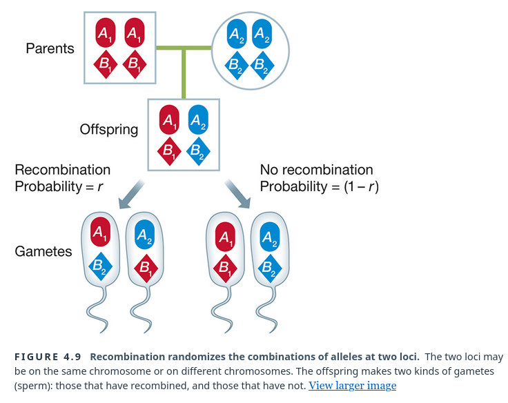
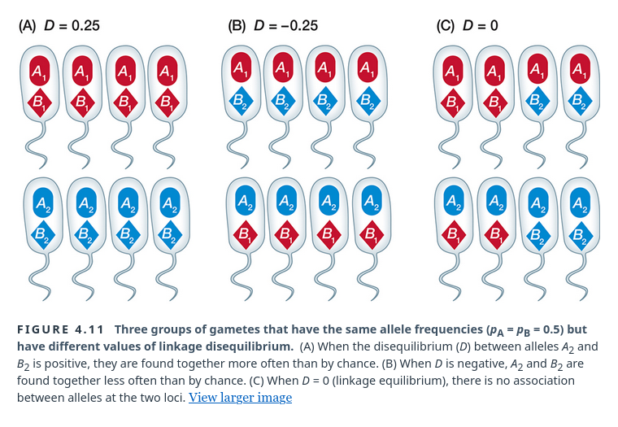
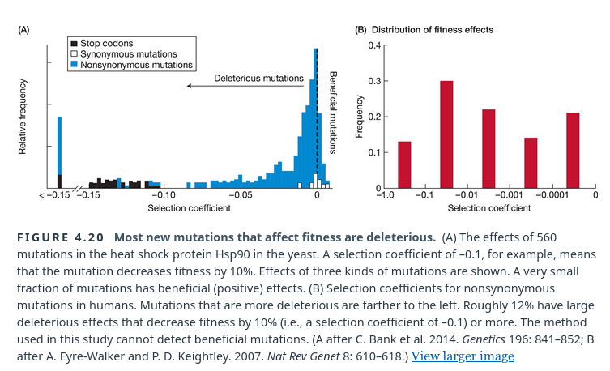

Fundamentals of Evolution
EEEB G6110
Session 6: Genetic Variation
Today's topics
1. Genetic variation
2. Mendelian Inheritance
Evolutionary Processes
The Modern Synthesis established mathematical models for
predicting
allele frequency changes in a population based
on five evolutionary processes:
- Selection
- Mutation
- Recombination
- Genetic Drift
- Migration (pop-structure)
Genetic Variation
Genetic variation is described by many terms which can often have both a general and highly technical meaning. It is important to have an understanding what is being described when we discuss genetic variation.
- Locus
- Gene
- Allele
- SNP
- Genotype/Haplotype
- Gene copy
Genetic Variation
Genetic variation is described by many terms which can often have both a general and highly technical meaning. It is important to have an understanding what is being described when we discuss genetic variation.
- Locus: A region of the genome.
- Gene: A region of the genome, or sometimes specifically a coding region.
- Allele: Variation (classes) at a specific locus or site.
- SNP: Variation at a specific DNA site (nucleotide).
- Genotype/Haplotype: A genome (or set of sampled parts of a genome) containing a specific set of alleles.
- Gene copy: a locus/gene region of a one chromosome in a population. A population of N diploids contains 2N gene copies for every locus.
Genetic Variation
Quantifying variation requires making some assumptions.
- Counting the number/frequency of alleles at some locus in a population requires determining boundaries of the locus.
- How to determine where a locus starts and ends... in theory, in practice, in comparing highly divergent elements.
- Should biological processes like transcription start and end points determine boundaries. Should function determine boundaries? (What do you think is commonly done?)
- How can we estimate allele frequencies at a locus without sampling every individual in a population, or species?
Genetic variation arises from mutations
Mutations occur randomly with respect to their potential fitness effects

Genetic Variation
Genetic variation arises from Mutations
- Mutations occur randomly with respect to their potential fitness effects (neutral/beneficial/deleterious)
- Mutations types/classes: point mutations, synon/non-synon, structural (insertions/deletions/duplications), germline vs somatic.
- New mutations create new alleles (A1, A2, ...Ax). These are initially at very low frequency (1/2N). Most new alleles/mutations have no fitness effect, or are deleterious. Most are lost by chance (genetic drift).
- Mutation rates can be best estimated by comparing genomes of children to their parents.
DNA and Forensics
Genetic markers used in forensics.
- Short Tandem Repeats (STRs) are short repeated sequences of DNA (2–6 bp): ...ATATAT... or ...CCGCCGCCG...
- STRs make up approximately 3% of the Human Genome (Lander et al. 2001).
- Their abundance and hypervariability (high mutation rate from replication errors) makes them an ideal marker for comparing even closely related individuals
- STRs can be amplified from low DNA quantities using PCR to count variation in the number of sequentially repeated copies.
- FBI CODIS originally used a set of 13 loci (now many more are in use). How were these chosen? Will they contain similar amounts of variation across all human populations?
Inheritance of Variation
How is variation transmitted from one generation to the next?
- Fundamental question that took surprisingly long to understand.
- Darwin and most others thought that inheritance involved blending of inherited materials.
- But in fact, inheritance through DNA/RNA occurs through particulate (discrete) inheritance.
Mendelian Inheritance
Gregor Mendel described 3 laws of inheritance in 1865.
- Dominance/uniformity: Some alleles are dominant while others are recessive; an organism with at least one dominant allele will display the effect of the dominant allele.
- Segregation: During gamete formation, the alleles for each gene segregate from each other so that each gamete carries only one allele for each gene.
- Independent Assortment: Genes of different traits can segregate independently during the formation of gametes.
Mendelian Inheritance
Principles described by Mendel.
- Characters are discrete (purple vs white), (round vs wrinkly).
- Genetic elements (loci) exist in alternative forms (alleles), with one inherited from each parent.
- One allele is dominant over the other.
- Gametes are created by random segregation, i.e., with equal frequency of the parents two alleles.
- Different traits have independent assortment. In modern terms, genes are unlinked.
Mendelian Inheritance
Segregation and Uniformity for two alleles at one locus showing complete dominance

Mendelian Inheritance
Segregation and Uniformity for two alleles at one locus showing incomplete dominance

Mendelian Inheritance
In either case: initial cross creates F1 generation with all possible combinations of genotypes given 4 parental alleles. Crosses among F1 genotypes yield a predictable ratio of genotypes/phenotypes in F2 generation, unmasking grandparent phenotypes.
Independent Assortment, recombination, and linkage

Chromosomes and Inheritance
Modern genetics was hugely influenced by the "rediscovery" of Mendel's work around 1900, and eventual incorporation into chromosome theory by Thomas Hunt Morgan at Columbia University in 1915. In his famous Fly Room at Columbia's Schermerhorn Hall, Morgan demonstrated that genes are carried on chromosomes and are the mechanical basis of heredity.


Genetic linkage
Genetic linkage mapping

Modeling Inheritance
Segregation and Independent Assortment play an important role in mathematical models of evolution, especially those of Wright and Fisher. Variants of these types of models eventually came to be called Wright-Fisher models.
Idealized Population
An idealized population is composed of an infinite number of individuals (N=inf) that live and die in discrete non-overlapping generations (gentime=1), and randomly mate each generation (panmictic). None of the Processes below occur.
- Selection
- Mutation
- Recombination
- Genetic Drift
- Migration (pop-structure)







Evolutionary Processes affect allele frequencies
Segregation and Independent Assortment play an important role in mathematical models of evolution, especially those of Wright and Fisher. Variants of these types of models eventually came to be called Wright-Fisher models.